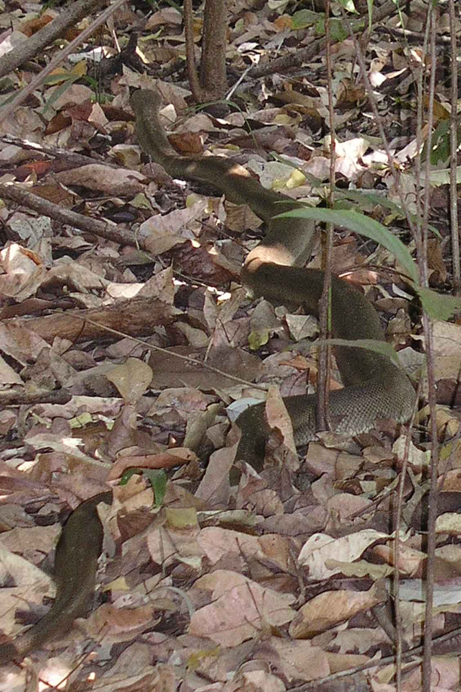
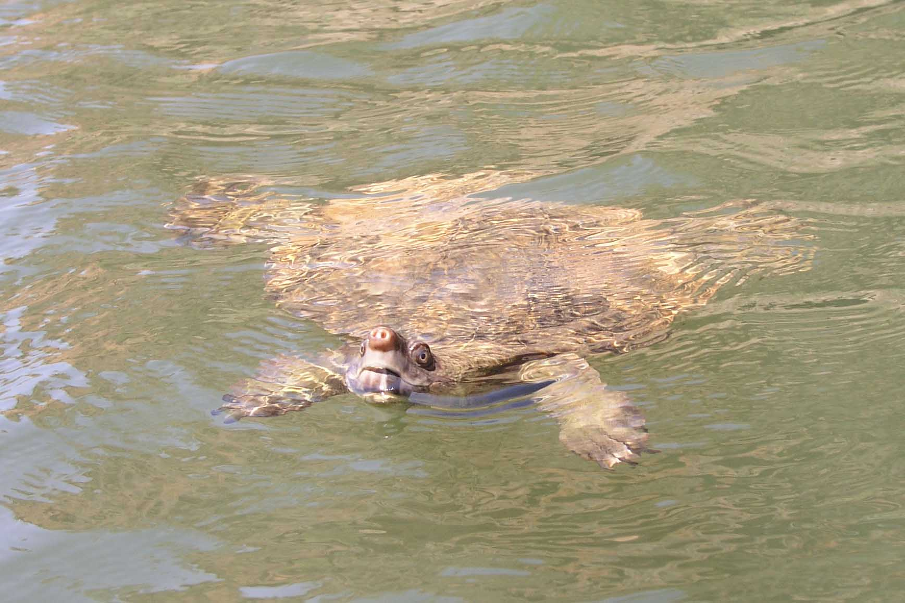
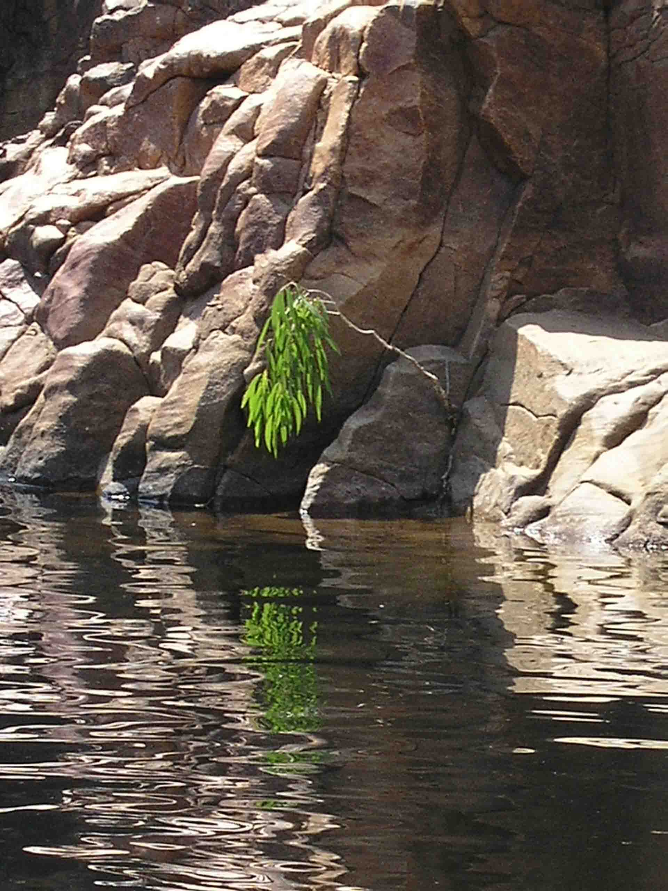
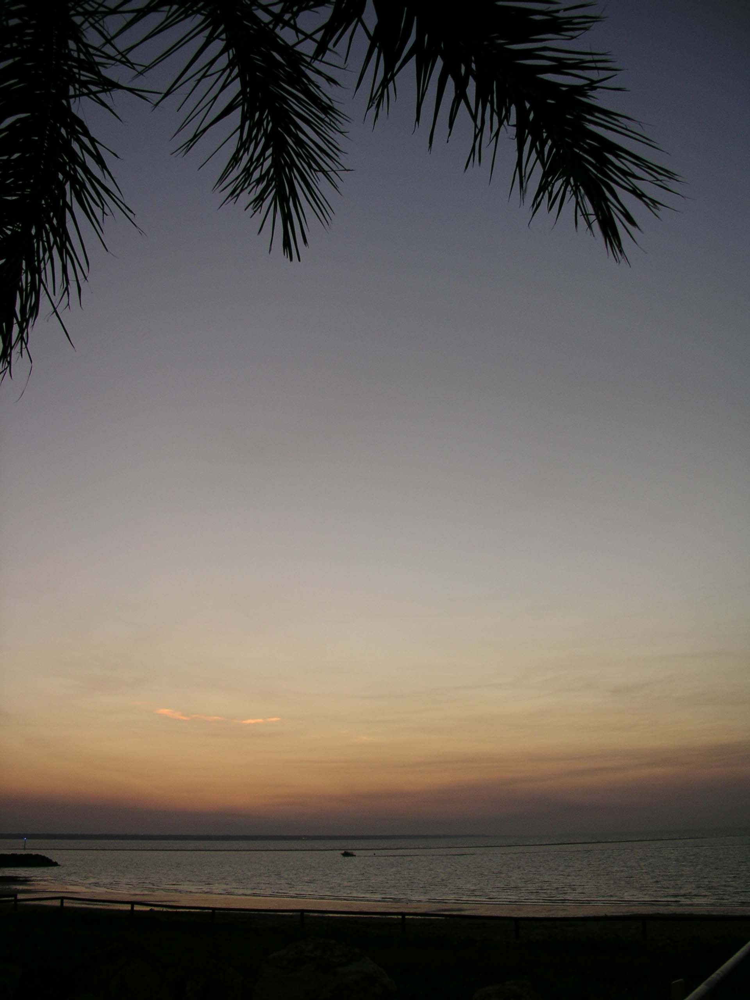
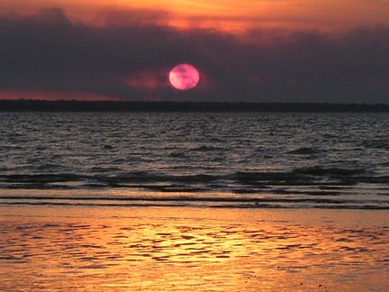
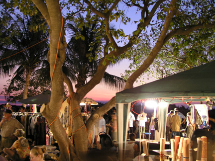

Japanese Endurance - the sequel
Darwin, Australia
Sometimes on this trip, as I have said before, we have felt like we were starring in Japanese Endurance, at others we have felt like we’d been transplanted into a scene out of Crocodile Dundee.
Yesterday was one of those days. We got up in the morning and headed out to Wangi Falls in Litchfield National Park. The park notes said that there was a relatively easy walk to the top of the escarpment overlooking the falls so we decided a nice stroll might be just what our aching bodies needed. On reaching the park the 1.6km easy stroll turned into a 3.2km steep walk through rocky areas in high heat. Strange how that happens sometimes!
Not 5 minutes into the walk we met two girls coming towards us telling tales of a “frightening brownish looking snake” on the path ahead. Being poms neither of us really understood the extent of their comment or realised that they’d actually turned back because of it. So we walked on – cautiously. And, sure enough, not far ahead was the sound of rustling leaves being made by the largest snake we’ve ever had the pleasure to meet. We were both pretty (whats the word...?) amazed by this 3m long thick brown green snake and (I hope that there aren’t any Aussies reading at this point) stopped and got close enough to get a couple of photos for posterity. All the time being watched closely by this unknown type of snake (his eyes were whirling madly as we slunk into a slumber – no – we weren’t that close!)
The walk through monsoon forest was beautiful – the escarpment was sweltering – and by the time we reached the pool at the base of the falls we were soaked through due to the very speedy walk (neither of us felt particularly like lingering in the long grass after our meeting with Kaa!)
By the pool was a tour guide with his group so we asked him about the snake. “Probably an olive python – did it have puffy cheeks?” he asked. “No – no puffy cheeks.” “Must’ve been a king brown.” “Is that a bad one?” asked Nathan. “Just about as bad as you can get." We took that to mean a deadly poisonous one that could kill a herd of buffalo by just looking in their general direction.
So, we'd only been up here for two weeks and we’d had a black whipper snake cross our path (“Not too poisonous” we were assured, “but enough to kill a small kid”) and we’d met a King Brown. Quite enough slithery creatures for one holiday so we decided this was are last bush walk.
We headed back after this exhausting day to the pub where we were staying at Adelaide River – a true Aussie pub complete with drinkers installed from 9am every morning and the buffalo that starred in Crocodile Dundee (the one that Mick hypnotised and moved him out of the road). The buffalo is a big tourist attraction – when he died in 1996 they had him stuffed and put on a stand near the bar. I must say that the ice-cold stubby of XXXX kept chilled in a polystyrene stubby holder was much needed that night!! The second was even more deserved and the third was compulsory.
I mentioned that we had started the day aching – that was because we had spent the day before kayaking on Katherine Gorge at Nitmuluk National Park. Katherine Gorge is another fantastic spot and also pretty good for canoeing due to there being no currents. We got through three gorges, but decided not to go any further due to the fact that the canoes needed to be carried through the sandbars (though made of rocks not sand) between each gorge and Nathan, who was our porter for the day, thought that three was plenty!
Paddling up the gorge, “Deliverance” came to mind. (Yep – truly – NT is the place that film sets are made of!) Sometimes there was just the two of us paddling between red stone cliffs, the gorge water slopping around our canoes and only a crow's cawing to break the silence as it echoed around the gorge. I can tell you, if we’d heard any banjos dueling we would’ve been out of there in no time!
We did have some company on our paddles though and that was an incredibly cute pig-nosed turtle who swam around and around our canoe checking us out. His head popped out of the water every few seconds to eye us and take a breath. A real inquisitive little fella, although undoubtedly that curiousity will get the better of him one day as the local Aboriginals have quite a taste for turtle and are legally allowed to “throw a turtle on the BBQ”.
Yesterday was one of those days. We got up in the morning and headed out to Wangi Falls in Litchfield National Park. The park notes said that there was a relatively easy walk to the top of the escarpment overlooking the falls so we decided a nice stroll might be just what our aching bodies needed. On reaching the park the 1.6km easy stroll turned into a 3.2km steep walk through rocky areas in high heat. Strange how that happens sometimes!
Not 5 minutes into the walk we met two girls coming towards us telling tales of a “frightening brownish looking snake” on the path ahead. Being poms neither of us really understood the extent of their comment or realised that they’d actually turned back because of it. So we walked on – cautiously. And, sure enough, not far ahead was the sound of rustling leaves being made by the largest snake we’ve ever had the pleasure to meet. We were both pretty (whats the word...?) amazed by this 3m long thick brown green snake and (I hope that there aren’t any Aussies reading at this point) stopped and got close enough to get a couple of photos for posterity. All the time being watched closely by this unknown type of snake (his eyes were whirling madly as we slunk into a slumber – no – we weren’t that close!)
The walk through monsoon forest was beautiful – the escarpment was sweltering – and by the time we reached the pool at the base of the falls we were soaked through due to the very speedy walk (neither of us felt particularly like lingering in the long grass after our meeting with Kaa!)
By the pool was a tour guide with his group so we asked him about the snake. “Probably an olive python – did it have puffy cheeks?” he asked. “No – no puffy cheeks.” “Must’ve been a king brown.” “Is that a bad one?” asked Nathan. “Just about as bad as you can get." We took that to mean a deadly poisonous one that could kill a herd of buffalo by just looking in their general direction.
So, we'd only been up here for two weeks and we’d had a black whipper snake cross our path (“Not too poisonous” we were assured, “but enough to kill a small kid”) and we’d met a King Brown. Quite enough slithery creatures for one holiday so we decided this was are last bush walk.
We headed back after this exhausting day to the pub where we were staying at Adelaide River – a true Aussie pub complete with drinkers installed from 9am every morning and the buffalo that starred in Crocodile Dundee (the one that Mick hypnotised and moved him out of the road). The buffalo is a big tourist attraction – when he died in 1996 they had him stuffed and put on a stand near the bar. I must say that the ice-cold stubby of XXXX kept chilled in a polystyrene stubby holder was much needed that night!! The second was even more deserved and the third was compulsory.
I mentioned that we had started the day aching – that was because we had spent the day before kayaking on Katherine Gorge at Nitmuluk National Park. Katherine Gorge is another fantastic spot and also pretty good for canoeing due to there being no currents. We got through three gorges, but decided not to go any further due to the fact that the canoes needed to be carried through the sandbars (though made of rocks not sand) between each gorge and Nathan, who was our porter for the day, thought that three was plenty!
Paddling up the gorge, “Deliverance” came to mind. (Yep – truly – NT is the place that film sets are made of!) Sometimes there was just the two of us paddling between red stone cliffs, the gorge water slopping around our canoes and only a crow's cawing to break the silence as it echoed around the gorge. I can tell you, if we’d heard any banjos dueling we would’ve been out of there in no time!
We did have some company on our paddles though and that was an incredibly cute pig-nosed turtle who swam around and around our canoe checking us out. His head popped out of the water every few seconds to eye us and take a breath. A real inquisitive little fella, although undoubtedly that curiousity will get the better of him one day as the local Aboriginals have quite a taste for turtle and are legally allowed to “throw a turtle on the BBQ”.

Katherine Gorge (spot Nathan in the canoe on the water)

...and more Katherine Gorge

See if you can spot Kaa

A pig-nosed turtle checking us out

Adeliade River Inn complete with buffalo from Croc Dundee

Road Train

Edith Falls

beautiful reflections in Edith Falls

a famous Darwin sunset

A Bushfire sunset over the Timor Sea

Mindil Markets, Darwin